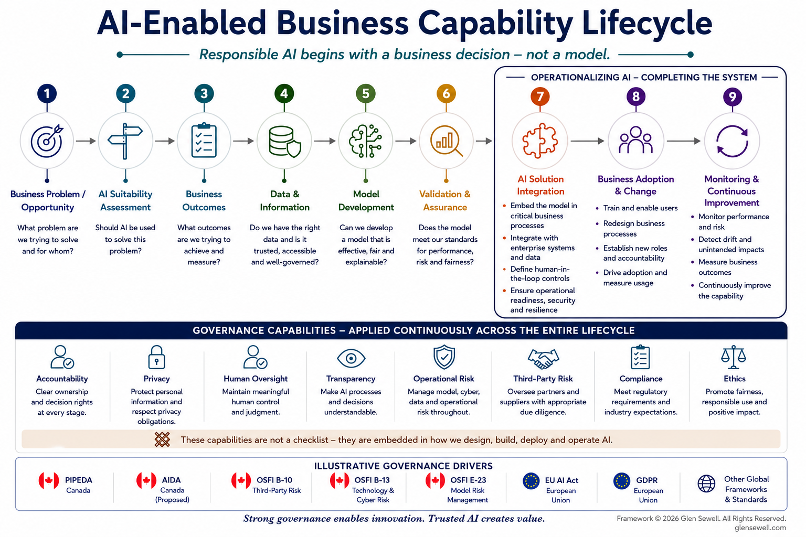

By Glen Sewell | Published June 2026
Policies, standards, and governance frameworks establish direction. A Responsible AI Operating Model translates those requirements into day-to-day execution by defining accountability, processes, technology enablement, reporting, and oversight across the AI lifecycle.
Many organizations invest significant effort developing AI principles, governance policies, and control requirements. While these elements establish direction, they rarely explain how governance activities are executed consistently across the enterprise.
A Responsible AI Operating Model bridges that gap by translating governance expectations into practical processes, accountability structures, reporting mechanisms, and operational controls.
Policies and standards are essential foundations of governance. They define expectations, establish minimum requirements, and articulate organizational principles. However, policies alone do not operationalize governance.
Organizations frequently create governance frameworks that look comprehensive on paper but struggle to embed them into day-to-day decision making. Effective governance requires clear ownership, repeatable processes, supporting technologies, and meaningful oversight mechanisms.
Without an operating model, governance activities become inconsistent, accountability becomes fragmented, and risk management efforts are difficult to sustain at scale.
A Responsible AI Operating Model establishes how governance functions in practice. It defines decision rights, accountability, execution processes, reporting structures, and oversight mechanisms that enable organizations to govern AI consistently across the enterprise.

Figure 1. A practical starting point for organizations seeking to operationalize Responsible AI through governance structures, accountability, processes, technology enablement, reporting, and oversight.
Practical Starting Point Organizations should tailor these components to their regulatory environment, risk profile, and AI maturity. The objective is not to create a perfect governance model on day one, but to establish the foundational capabilities required to scale Responsible AI consistently and responsibly.
There is no single operating model that works for every organization. Industry regulations, risk tolerance, organizational maturity, and AI adoption patterns will influence how governance capabilities are designed and implemented.
The model presented here is not intended to replace established frameworks such as the NIST AI Risk Management Framework (AI RMF) or ISO 42001. Rather, it provides a practical starting point for organizations seeking to operationalize those frameworks through governance structures, accountability, processes, technology enablement, reporting, and oversight.
Together, these seven components create the organizational foundation required to govern AI consistently, transparently, and responsibly at scale.
Governance structures establish decision rights, accountability, oversight, and escalation paths. Effective Responsible AI programs clearly define who approves AI use cases, who manages risk, and who is accountable for ongoing governance activities.
Responsible AI requires coordinated participation across business, technology, risk, compliance, legal, privacy, and data governance teams. Clearly defined roles help eliminate ambiguity and strengthen accountability.
Policies and standards translate organizational principles into practical requirements. They establish expectations for transparency, accountability, risk management, monitoring, documentation, and responsible use of AI.
Operating procedures define how governance activities are executed throughout the AI lifecycle, including intake, review, approval, deployment, monitoring, change management, and retirement.
Technology supports governance through inventories, workflow management, lineage, controls management, documentation repositories, monitoring solutions, and reporting capabilities.
Governance effectiveness must be measurable. Reporting frameworks provide visibility into compliance, risk exposure, model inventories, issue remediation, and governance performance.
Responsible AI capabilities should evolve over time. A roadmap provides a structured approach for implementing governance capabilities while adapting to changing business priorities, regulatory expectations, and technology change.
A Responsible AI Operating Model provides the organizational capabilities needed to operationalize frameworks such as the NIST AI Risk Management Framework. While NIST AI RMF defines activities such as Govern, Map, Measure, and Manage, the operating model defines how those activities are executed consistently across the enterprise.
Governance structures, accountability, processes, technology enablement, reporting, and oversight provide the foundation necessary to operationalize AI risk management at scale.
Responsible AI is not achieved through policies alone. It requires an operating model that translates governance expectations into repeatable execution.
Organizations that successfully scale AI are not necessarily those with the most comprehensive governance frameworks, but those with the strongest ability to operationalize them consistently across the enterprise.